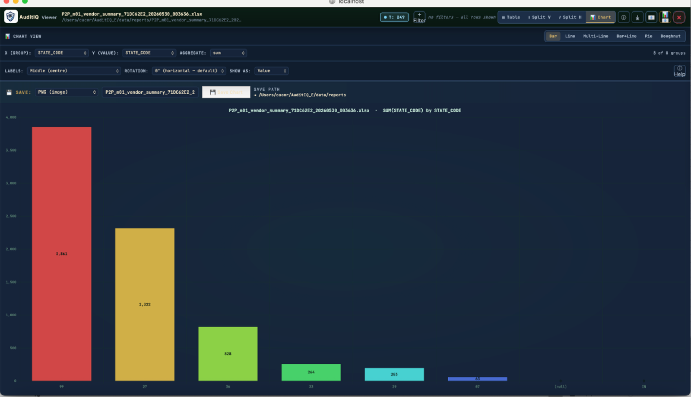

Line 3 · Independent Assurance
Statutory & Internal Auditors
- Full-population coverage and faster audit cycles
- Sharper risk assessment and audit planning
- Defensible evidence pack — EQCR, TCWG and regulator ready
1,050+ automated checks turn 100% of your population into exception reports, early-warning signals and review-ready evidence — for confident decisions and timely action.

One platform for Statutory & Internal Auditors, CROs & Risk Management, and CFOs & Executives — across industries — converting full-population data into exceptions, early-warning indicators and review-ready evidence.

Trusted across the assurance ecosystem
Engagement dashboards, full-population analytics, exception registers and defensible evidence packs — one disciplined workspace for assurance, risk and finance, from raw data to informed action.
Toggle between traditional sampling and VIGILO's full-population testing — see, in dots, exactly what gets tested and what doesn't.
A typical statutory sample tests ~5% of records. 95% of the population is never examined. VIGILO runs 1,050+ automated checks across every record — visualised here as 900 dots representing your data.
A proprietary library refined over two decades — covering the cycles that drive audit findings across industries, with deep BFSI coverage.
Vendor masters · invoices · 3-way match · duplicate payments.
IRAC · ECL · DPD · KYC · staging migration.
AR ageing · credit limits · write-offs · collection efficiency.
JV scrutiny · postings · control accounts · period-end anomalies.
Valuation (Ind AS 2) · movement · ageing · obsolescence.
Payroll · attendance · statutory deductions · master integrity.
MIS · KPIs · summary reports for partners and leadership.
Capex · depreciation · asset master integrity · disposals.
Connected-party detection · exact + fuzzy matching.
KYC · dormancy · concentration · interest application.
Bar, multi-line, pie, doughnut, split table-plus-chart — every exception comes with the picture that makes it actionable.

Period-over-period bars surface spikes, dips and seasonality that drive sampling decisions.

State / branch / vendor / product distribution — find the hot spots before fieldwork.

Visualise the Stage 1 → 2 → 3 movement and the products driving NPA build-up.

Click a bar to drop straight into the exception register — chart and evidence in one view.
A disciplined four-step path — for detection, prevention, decision and defensible evidence across the three lines of assurance.
Register sources, extracts and tables — core banking, ERP, LMS, GSTN, files.
Risk-driven normalization with reviewed, versioned rule logic.
1,050+ checks executed on the full dataset — exceptions surfaced.
Triage, decide and drive timely action — defensible evidence for management review and audit defence.
Built for Statutory & Internal Auditors, CRO and Risk Management Functions, and CFOs & Executives — strengthening audit, risk and financial oversight across the organisation, in BFSI and across general enterprise.
Pre-built analytics aligned to the cycles, regulations and risks that drive audit findings, risk decisions and management action — with deep BFSI coverage and broad enterprise-cycle support.
Duplicate payments, broken 3-way match, vendor master integrity, kickback & circular-payment patterns.
Unusual journals, backdating, reversals, maker-checker violations and period-end spikes across the GL.
GSTR-2B vs Purchase Register, 26AS vs books, section-wise short-deduction analysis.
DPD ageing, staging movement (Stage 1 → 2 → 3), PD/LGD/EAD changes, overrides & overlays.
Connected-party detection — exact + fuzzy matching across CIFs, employees, vendors and counterparties.
End-to-end trail across data edits, rule changes, project events and exports — Companies Act ready.
A rolling read of practitioner notes from senior partners, risk officers and finance leaders. Hover to pause.
"VIGILO turned a five-week audit cycle into something we could review in a single sitting — and every exception traces back to source."
"For the first time, our audit team had full-population assurance evidence in under 24 hours. The conversation with management shifted entirely."
"We used to lose two weeks every cycle just re-training new joiners. The codified library means standard checks run identically every engagement."
"The connected-party detection alone changed how we approach related-party transactions. Fuzzy matching finds links we used to miss entirely."
"Exception-led reporting moved us from 'finding things after the fact' to 'flagging things at the desk that owns the process'. That's the real shift."
"For EQCR and TCWG reporting, the evidence pack is genuinely defensible. Every flag is traceable. That alone is worth the engagement."
"VIGILO turned a five-week audit cycle into something we could review in a single sitting — and every exception traces back to source."
"For the first time, our audit team had full-population assurance evidence in under 24 hours. The conversation with management shifted entirely."
"We used to lose two weeks every cycle just re-training new joiners. The codified library means standard checks run identically every engagement."
"The connected-party detection alone changed how we approach related-party transactions. Fuzzy matching finds links we used to miss entirely."
"Exception-led reporting moved us from 'finding things after the fact' to 'flagging things at the desk that owns the process'. That's the real shift."
"For EQCR and TCWG reporting, the evidence pack is genuinely defensible. Every flag is traceable. That alone is worth the engagement."
Composite quotes · individual attributions added as client approvals come in
VIGILO runs inside your infrastructure, under your information-security policy, with a defensible trail of every action.
Deploy inside your own data centre or private cloud — controlled, auditable data movement.
Segregation of duties for preparers, reviewers, EQCR and admins.
Every output traces back to source tables, extraction dates, record counts and logic.
Approved logic, thresholds and evidence retained and versioned for future review.
Evaluate VIGILO on a defined scope of your own data — no disruption, no sampling. We respond within one business day.